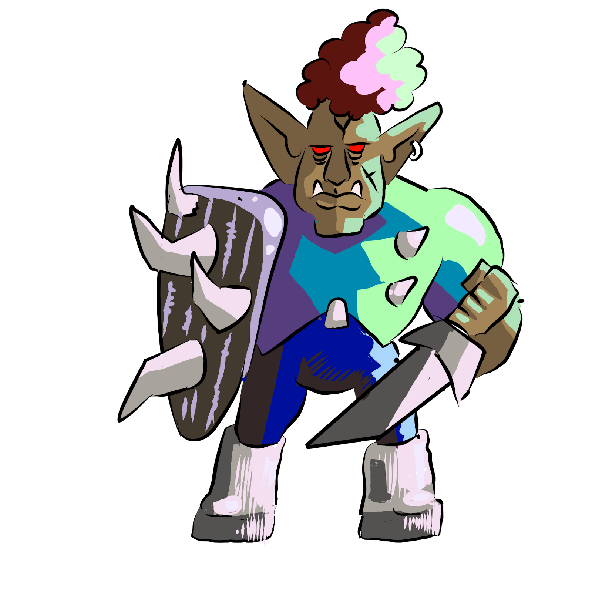

Armored ork!.
Lv 2 Fae Creature, Experience Granted: 20, Size: 5 Foot Cube, Speed: 25 Feet
Loot: Heavy Shield(+3 Armor Buffer, Held, Heavy)
Resistant to blunt and sharp damage. Armork does not like to rush into combat.
HP 70, Energy 5, Defense 6
Standard Actions 2, Extra Actions 1
Toughness 15, Evasion 13, Willpower 11
Tech 11, Charm 13, Detect 15, Inspect 15, Medicine 11, Knowledge 11, Stealth 11